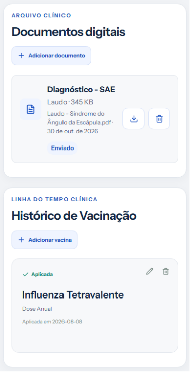
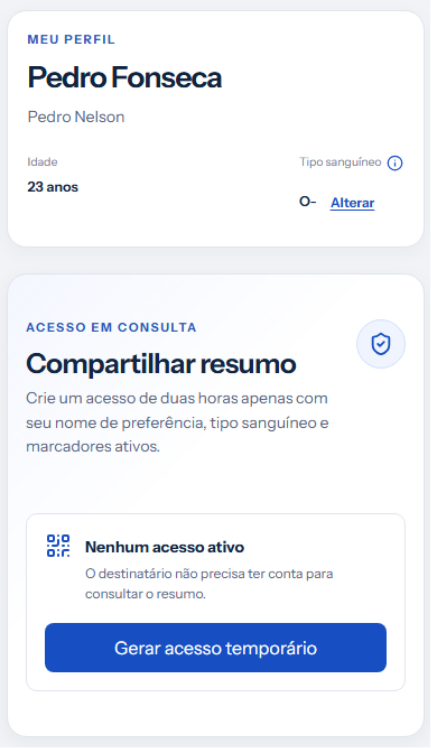
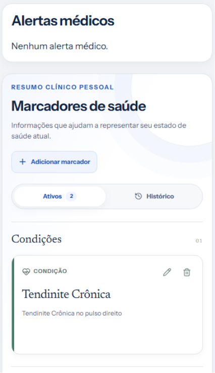

A plataforma inteligente onde você faz upload de documentos de saúde, laudos e vacinas. Compartilhe seu resumo com qualquer médico em segundos, sem complicações.

Se preocupe apenas em cuidar do que mais importa: sua saúde.
O DUS organiza todos os seus laudos, vacinas e informações médicas automaticamente.
Envie laudos em PDF, fotos de receitas, exames de sangue e relatórios médicos em poucos toques.
Crie um acesso seguro de 2 horas para o médico consultar na hora. Ele não precisa ter conta!
Tipo sanguíneo, alergias, condições crônicas e histórico de saúde sempre à mão em emergências.
Mantenha doses aplicadas, reforços anuais e comprovantes de imunização centralizados e seguros.

Insira seu nome, data de nascimento e tipo sanguíneo. Seus dados básicos ficam prontos em segundos.
Faça upload de PDFs de laudos, comprovantes de vacinas e exames laboratoriais na nuvem.

Crie um link temporário ou QR Code de 2 horas. O médico visualiza seu resumo clínico de forma rápida e segura.
Crie seu Documento Unificado de Saúde gratuitamente em menos de 2 minutos e nunca mais perca um exame médico.